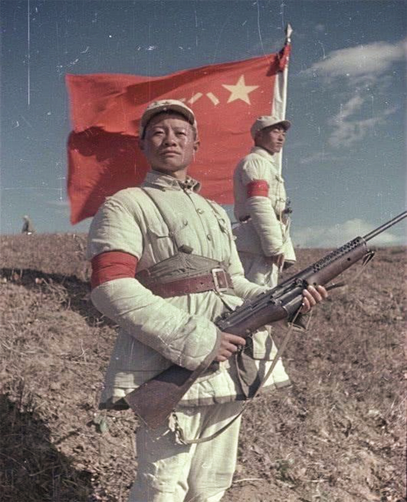

Burn it!
China
The Great Blessing of the People
and the Great Power of the Country

The Great Blessing of the People
and the Great Power of the Country


Rapidly developed and artillery and communication forces of navy, air force and army were established. Technical forces such as engineers and railways have formed operational capabilities.
The Air Force of the Chinese People's Volunteer Army, in the War of Resistance Against the United States and Assistance to the DPRK, followed the principle of "training from actual combat". The way to grow up in battle is from not fighting air battles to learning to fight air battles, from being able to fight small-scale air battles to being able to fight large-scale air battles. As the volunteer air force is generally at a disadvantage, it also pays a high price.


The emergence of the volunteer Navy in the Korean battlefield is a confrontation stage in the battlefield situation. In May 1952, the Navy decided to send torpedo boat troops, mine troops and shore artillery troops to the DPRK to participate in the defense of the West coast.

The Chinese People's Volunteer Army (PLA) is a group of soldiers who carry out combat tasks with firepower in the PLA sequence. Artillery is divided into ground artillery and antiaircraft artillery according to its combat mission. Volunteer artillery, usually ground artillery. It is the backbone of the volunteer army's fire assault on ground targets in the war of resisting US aggression and aiding Korea.